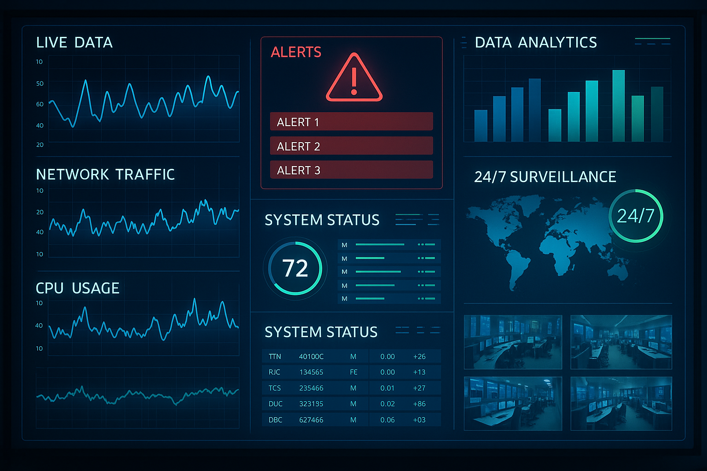

Slide 19: Continuous Monitoring - Transforming Compliance from Reactive to Proactive
AI-powered continuous monitoring enables organizations to detect risks early, track changes in real-time, and maintain audit readiness

Continuous monitoring represents a fundamental shift from periodic compliance audits to ongoing, real-time oversight of AI systems. Traditional compliance approaches conduct scheduled reviews that may miss issues emerging between audits, creating windows of vulnerability. Continuous monitoring eliminates these gaps through:
Real-time tracking: Monitors user behavior, transactions, and system performance continuously, sending instant alerts when anomalies occur.
Predictive analytics: Leverage historical data and current trends to forecast future compliance risks, enabling proactive intervention before violations occur.
Automated regulatory change management: Scans, interprets, and summarizes regulatory updates, helping organizations understand impacts and ensure consistent application of new rules.
Anomaly detection systems: Identify subtle patterns that traditional rule-based approaches might miss, distinguishing between routine behavior and potential red flags through ongoing learning.
24/7 operations: Provide constant oversight without the fatigue and scale limitations that affect human monitoring, enabling surveillance across large organizations that would be impossible manually.
This continuous approach maintains organizations in a state of audit readiness rather than requiring intensive preparation when audits are scheduled.
Rubric References and Detailed Explanations
Full Detailed Content: The complete text from the markdown file for Slide 19, including the heading and all bulleted points, is included without summarization.
Responsive Design: CSS uses a flexible container (`width: 90%`, `max-width: 1200px`), media queries (`@media (max-width: 768px)`), and relative units (`em`, `vh`, `auto`) to ensure the layout adapts gracefully to different screen sizes, especially for mobile devices.
Professional Styling: A clean, modern color palette (dark blue, bright blue, light gray background) and a professional sans-serif font stack (`Segoe UI`, etc.) are used. Content is well-structured with clear headings, borders, and shadows for visual hierarchy.
Slide Image Inclusion: The image is referenced using the specified relative path (`../../slide_images/slide_19.png`) and styled to be responsive (`max-width: 100%`).
Navigation Buttons: Clearly labeled "Previous," "Home," and "Next" buttons are provided with appropriate links (assuming a standard file naming convention for the full presentation).
Footer Inclusion: The required footer content is present in the `